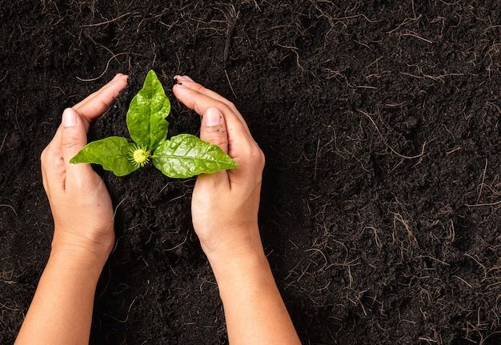

Berkebun Organik
Berkebun organik adalah kegiatan bercocok tanam tanpa menggunakan bahan kimia sintetis seperti pestisida dan pupuk kimia. Berkebun organik bertujuan untuk memproduksi bahan pangan yang sehat dan aman bagi konsumen serta ramah lingkungan. Berkebun organik juga dapat membantu melestarikan lingkungan hidup karena tidak menggunakan bahan kimia sintetis yang dapat merusak lingkungan hidup.
Manfaat Berkebun Organik
Berkebun organik memiliki banyak manfaat, antara lain:
- Menghasilkan bahan pangan yang sehat dan aman bagi konsumen.
- Meminimalkan penggunaan bahan kimia sintetis yang dapat merusak lingkungan hidup.
- Menjaga keberagaman hayati tanah dan ekosistem.
- Menjaga keseimbangan ekosistem tanah.
Cara Berkebun Organik
Berikut adalah langkah-langkah cara berkebun organik:
- Pilih lahan yang subur dan terkena sinar matahari langsung.
- Persiapkan kompos organik sebagai pupuk.
- Pilih bibit tanaman organik yang sesuai dengan kondisi lahan.
- Tanam bibit tanaman organik dengan jarak tanam yang sesuai.
- Lakukan pemeliharaan tanaman secara teratur dengan cara menyiram, memberi pupuk, dan memangkas tanaman.
- Panen hasil tanaman organik secara berkala.